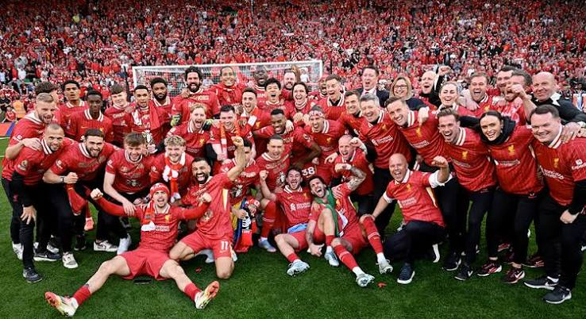

Bienvenido
El Liverpool Football Club es un equipo de fútbol inglés fundado en el año 1892, con sede en la ciudad de Liverpool. Es uno de los clubes más importantes de Inglaterra y ha sido campeón de la Premier League, la Champions League y varios torneos nacionales e internacionales.

El club juega de local en el estadio de Anfield desde 1892 y su hinchada es reconocida en todo el mundo por cantar el himno "You'll Never Walk Alone" antes de cada partido.
En esta página puedes conocer un poco más sobre la historia del club, la plantilla actual y el estadio. Usa el menú de arriba para navegar entre las secciones.